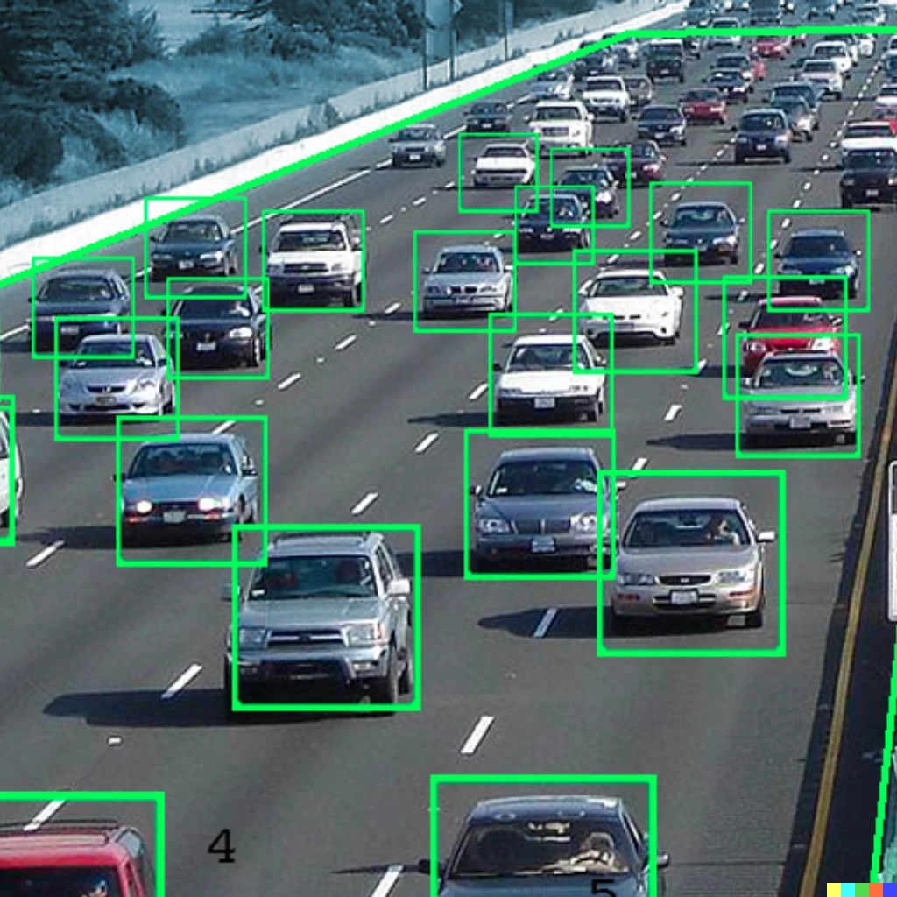

+++
title = "HackHPC"
linkTitle = "HackHPC"
+++
{{< blocks/cover title="" image_anchor="top" height="auto" color="orange" >}}
Modernizing Hackathon
{{< blocks/link-down color="info" >}}
{{< /blocks/cover >}}
{{% blocks/lead color="dark" %}}
Hack-A-Thon
Hackathons are collaborative gatherings of people to learn and apply skills towards a particular problem in a defined amount of dedicated time. In the case of the Cloud HPC and SGCI Team Hackathons, the participants are commonly undergraduate/graduate students teamed with mentors in the academic and/or commercial field that collaboratively identify a problem/issue and then both learn and apply skills to develop products that address that problem/issue.
{{% /blocks/lead %}}
{{< blocks/section color="white" >}}
{{% blocks/feature icon="fa fa-road" color="dark" title="Roadway Traffic
Solutions" url="" %}}

**TRAFFIC & INCIDENTS**
TrafficVision™TMC is turning cameras into sensors around the world, increasing roadway awareness and safety. **Real-time anomaly and incident detection** reduces response time and secondary incidents, helping to save lives.
Roadway data is key to understanding the flow, potential for incidents, tollway count validation, and where to spend funding for improvements. TrafficVision™TMC **collects data in a non-intrusive way**, allowing you to extract insites and details across a roadway network.
By using state of the art Video Analytics algorithms, TrafficVision™TMC gives users a **system-wide view of traffic flow** and provides an understanding of slowdowns, incidents, and anomalies on the roadways.
}}">
Learn More
{{% /blocks/feature %}}
{{% blocks/feature icon="fa fa-truck" title="REGISTER" url="" %}}
**Are you thinking about participating**
**in the next Hackthon?**
**To stay up to date on Hackathon events:**
Follow us on TWITTER
Join our DISCORD
Subscribe to our ALUM EMAIL and LINKEDIN GROUP
}}">
Learn More
{{% /blocks/feature %}}
{{% blocks/feature icon="fa-brands fa-twitter" title="@TrafficVision" url="" %}}
{{% /blocks/feature %}}
{{% /blocks/section %}}
{{< blocks/lead color="gray" >}}
Collaborations
-
360ns -
CalTrans -
City of Calgary -
CODOT -
CTRMA -
Curiosity Lab at Peachtree Corners -
FDOT -
GDOT -
KCScout -
Skyline -
Kapsch -
MTO -
MDOT -
MNDOT -
MODOT
NMDOT -
NTTA -
PA Turnpike -
PennDOT -
Peraton -
POLB -
QAS -
RCTC -
SCDOT -
Tetra Tech -
TRIMARC -
WSP -
{{< /blocks/lead >}}